为什么小程序不使用浏览器的线程模型？
问题1：
微信小程序与 Web 网站在技术层面的主要区别是什么？问题2：
什么是小程序的双线程模型？双线程模型
浏览器并不是单线程而是多进程的
除了通用的进程之外，chorme给每个标签页独立的渲染进程，每个进程之间的资源（CPU、内存等）和行为（UI、逻辑等）互不共享
每个进程内包括：GUI渲染线程、JavaScript引擎线程、定时触发器线程等。
GUI渲染线程和JavaScript引擎线程之间的互斥、阻塞的线程管理方式
为什么JavaScript被设计成单线程的呢？语法上：JavaScript 借鉴了 Java，但是去除了很多复杂的设定
运行机制上： JavaScript 并没有像 Java 那样提供多线程能力，主要是为了避免多线程操作DOM造成UI冲突
提供了WebWorker，主从线程关系
Worker内的 JavaScript 代码不能操作DOM，可以将其理解为线程安全的
为什么小程序不使用浏览器的线程模型？- 小程序的宿主是微信，定位是小而美，具备一些微信提供的原生能力
- 小程序与微信的关系与网站与浏览器的关系不同，更倾向于平台与程序案例的关系
- iframe，需要在一次编译流程，剔除危险代码之后，再注入到iframe，因此需要引入额外的 JavaScript 编译器
- WebWorker非常耗费资源，与主线程的通信过程对性能的损耗也非常厉害
安全高效的小程序双线程模型
小程序并不需要支持所有的 HTML 标签，只提供有限的几类 UI 组件
- 限制UI组件类型，只允许声明指定的几个组件
- 保证逻辑线程安全，不允许直接操作UI组件（hbrid架构、webview渲染ui、类似webworker的独立线程处理逻辑）
- 能够在线更新，不依赖微信
- 性能需尽量提升，保证用户体验
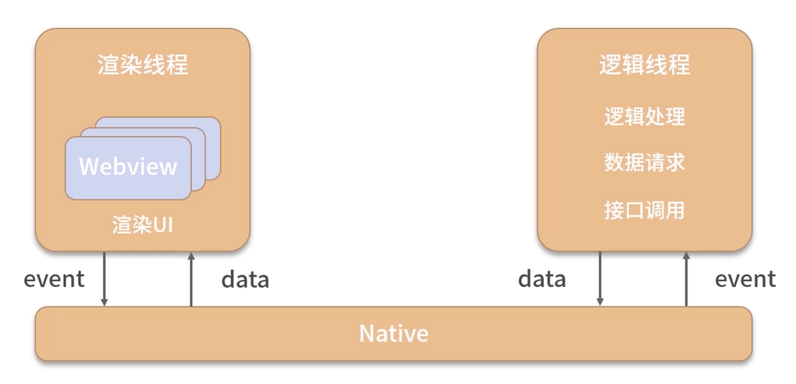
双线程：渲染线程（UI的渲染）和逻辑线程（执行JS代码）
与 Vue/React 不同
小程序的渲染层与逻辑层之间的通信并不是在两者之间直接传递数据或事件，而是由 Native 作为中间媒介进而转发
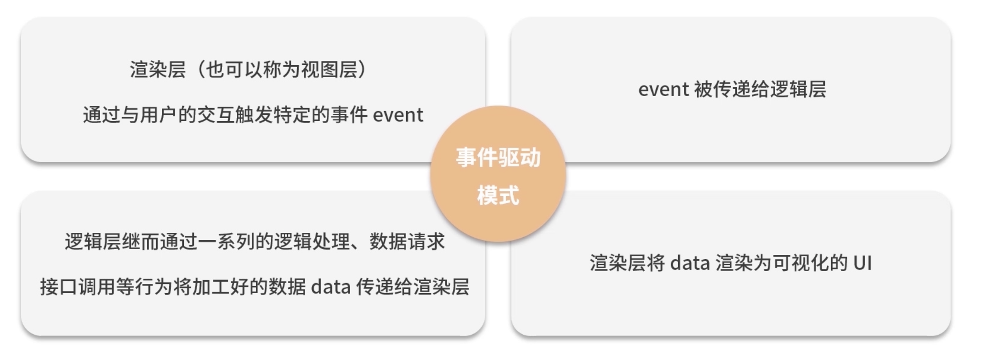
逻辑与渲染分离的线程分工模式
- 能够保证运行在逻辑线程沙箱内的 JavaScript 代码是线程安全的
- 由于渲染线程的计算量非常小保证了对用户交互行为的快速响应，提高用户体验
双线程模式规避Web Worker堪忧的性能达到了与之相同的线程安全
双线程模式受限于浏览器现有进程和线程的管理模式下，在在小程序内的一种改进架构方案
（v-dom原理、diff算法、多线程编程）
用户体系与OAuth规范
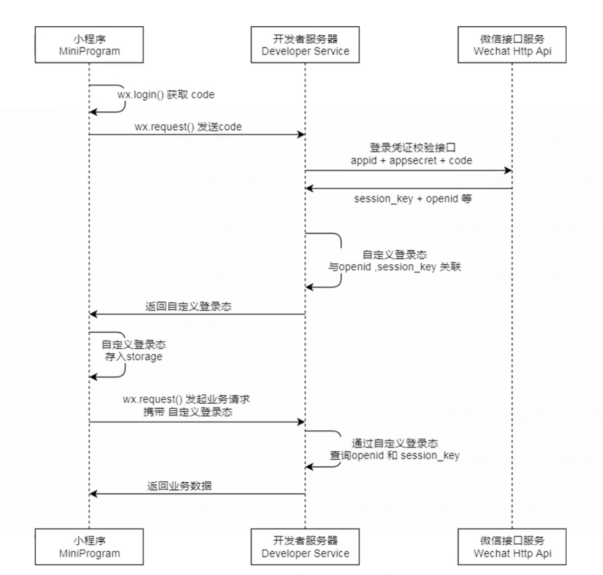
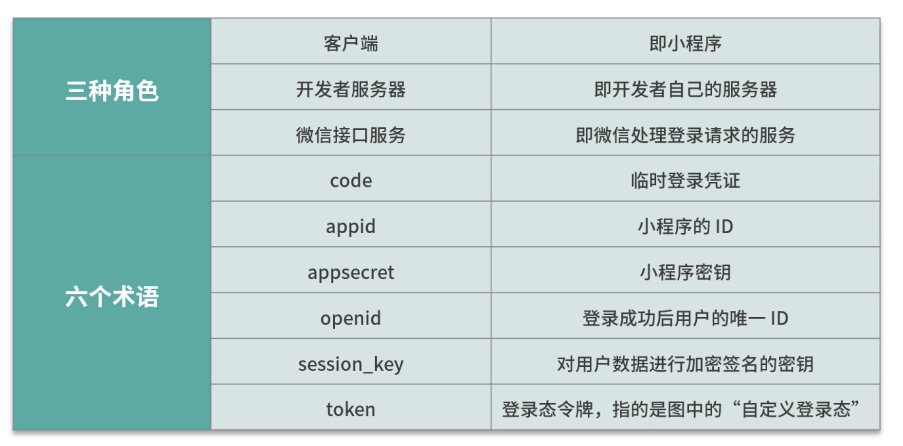
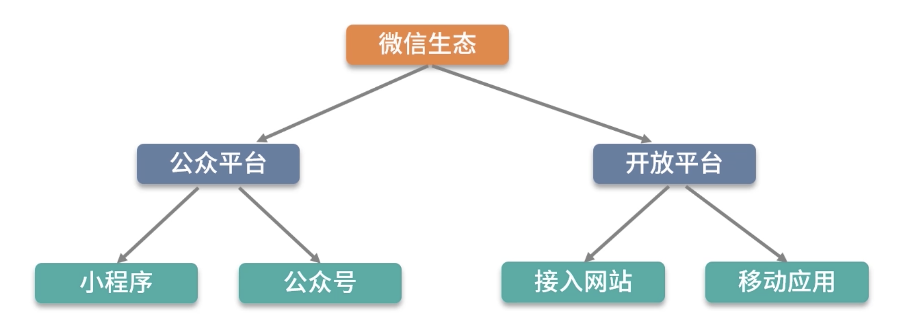
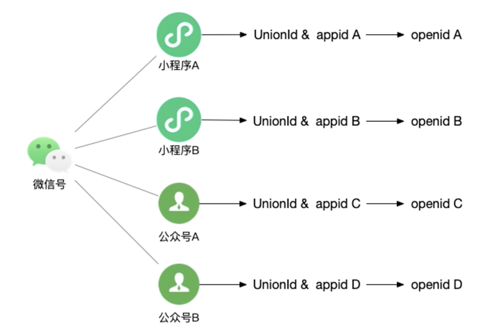
OAuth2.0 角色
- Resource Owner(资源所有者)：在小程序场景下代表小程序的用户
- Resource Server(资源服务器)：在小程序场景下这个角色由微信服务器承担
- Third-party-application(第三方应用程序/又称客户端)：在小程序场景下代表小程序
- User Agent(用户代理)：在小程序场景下代表微信
- Authorization server(认证服务器)：在小程序场景下，这个角色由微信服务器承担
- HTTP Service(HTTP 服务提供商)：在小程序场景下，这个角色由微信服务器承担
微信小程序角色划分
- 微信同时担任 Third-party-application 和 User Agent 的功能
- 微信服务器同事担任 Resource Server、Authorization server 和 HTTP Service 的功能
- 开发者服务器担任 HTTP Service 的功能，也充当了客户端的一部分功能
组件化思维
微信小程序渲染自定义组件使用的是 Shadow DOM（web components）
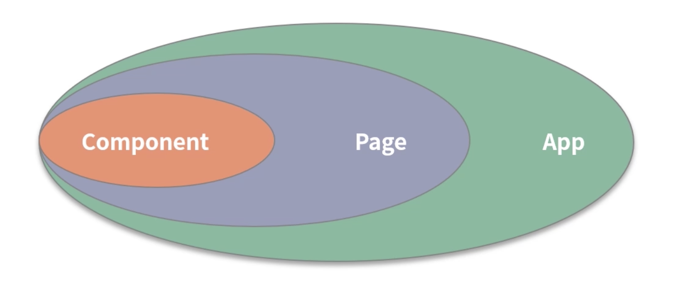
自定义组件的文件结构
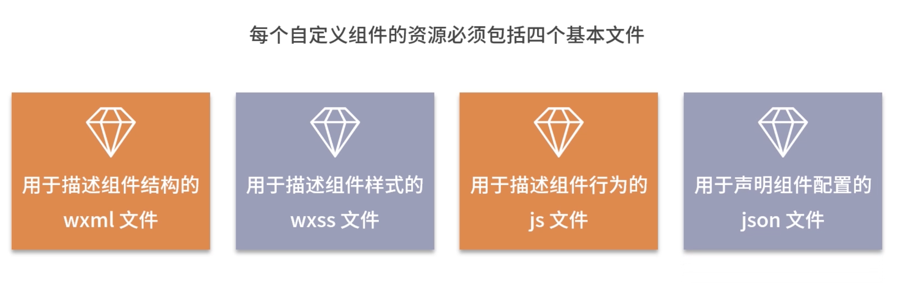
自定义组件的生命周期
小程序组件的钩子函数
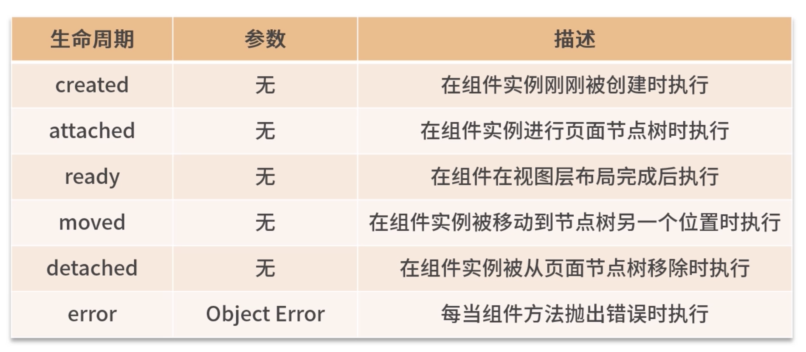
web components对自定义组件的生命周期：
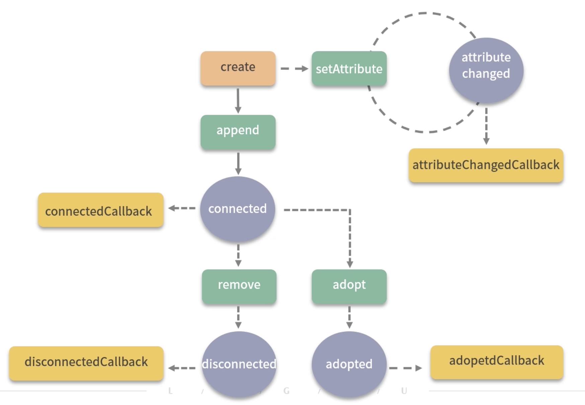
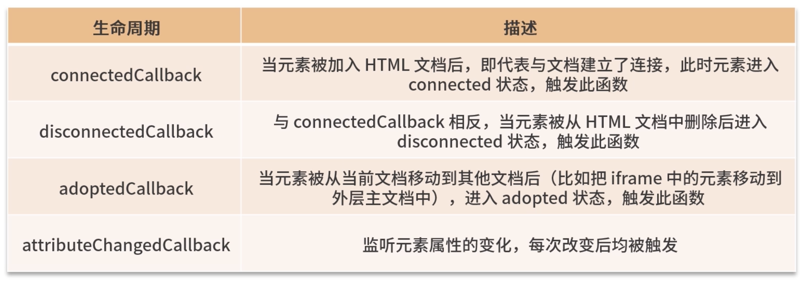
理解小程序的生命周期
- 小程序自定义组件的 attached 和 detached 函数分别对应 Web Components 规范的 connectedCallback 和 disconnectedCallback
- 小程序自定义组件的 moved 函数与 Web Components 规范的 adoptedCallback 类似，但作用并不完全相同（因为小程序不支持iframe，所以不存在组件在文档上的迁移，只能在文档上的不同父节点之间迁移）
- 小程序自定义组件独有的生命周期函数，created、ready 和 error
- Web Components 规范独有的生命周期函数，attributeChangedCallback
Web Components 规范对 attributeChangedCallback 函数的描述为：当自定义元素的任一属性发生改变（包括新增、删除、更新）时触发
微信小程序不允许直接操作DOM，根本上不会发生 DOM 属性改变的情况
Web Components 规范为何没有 created/ready/error 三个函数？Web Components 规范脱离于业务，单纯从技术角度提供了最基础的标准和参考，具体到实现层面
小程序的自定义组件之间的通信流程
-
子组件通过抛出事件将数据传递给父组件
-
父组件通过 properties 将数组传递给子组件
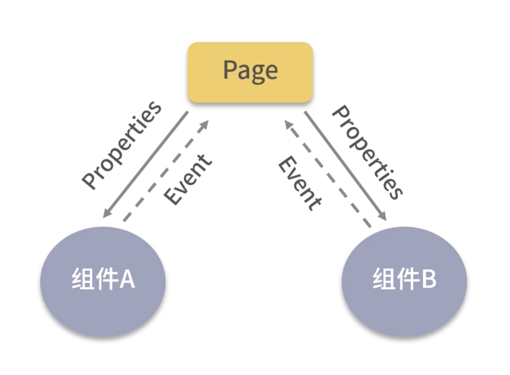
小程序提供一种更加简单粗暴的方法
父组件通过 selectComponent 方法直接获取某个子组件的实例对象，随后将这个子组件的某个属性通过 properties 传递给另外一个子组件